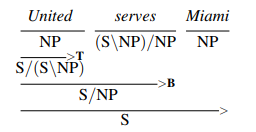

Speech and Language Processing 3ed draft, Chapter 10, Formal Grammars of English
Notes
10.2 Context Free Grammars
A grammar is defined by a 4-tuple:
- \(N\), a set of non-terminals
- \(\Sigma\), a set of terminals
- \(R\), a set of productions \(A\rightarrow \beta\) where \(A\) is non-terminal and \(\beta\) is a string of symbols from the infinite set of strings \((\Sigma \cup N)*\)
- \(S \in N\), a designated start symbol
Direct derivation: if \(A \rightarrow \beta \in R\) and \(\alpha, \gamma \in (\Sigma \cup N)*\), then \(\alpha A\gamma\) directly derives \(\alpha\beta\gamma\), or \(\alpha A\gamma \Rightarrow \alpha\beta\gamma \)
Derivation, a generalization of direct derivation: if \(\alpha_1,...,\alpha_m \in (\Sigma\cup N)*, m \geq 1\), such that \(\alpha_1 \Rightarrow \alpha_2\alpha_3 \Rightarrow \alpha_3,\ldots,\alpha_{m-1} \Rightarrow \alpha_m\), then \(\alpha_1\) derives \(\alpha_m\), or \(\alpha_1 \overset{*}{\Rightarrow} \alpha_m\)
So the corresponding language \(\mathscr{L}_G = \{w|w \in \Sigma* \wedge S \overset{*}{\Rightarrow} w\}\), i.e. the set of all terminal strings that can be derived using productions in \(R\).
10.5 Grammar Equivalence and Normal Form
Two kinds of grammar equivalence:
- Weak equivalence: same set of terminal strings
- Strong equivalence: same set of terminal strings and same phrase structure
Sometimes normal forms are useful. Chomsky normal form is \(\epsilon\)-free, and all productions have either two non-terminals or one terminal. (This makes it binary branching.)
Any CFG can be turned into a weakly equivalent CNF grammar. E.g., \(A \rightarrow B C D \Rightarrow A \rightarrow B X, X \rightarrow C D\).
Generating a symbol A with a potentially infinite sequence of symbols B with a rule of form \(A \rightarrow A B\) is known as Chomsky-adjunction.
10.6 Lexicalized Grammars
CFG's and related approaches minimize the role of the lexicon, leads to brittleness and redundancy. Other approaches make more use of the lexicon.
10.6.1 Combinatory Categorial Grammar
Categories: either atoms or single-argument functions that return a category when provided with a desired category. Set of categories \(\mathscr{C}\) defined as:
- \(\mathscr{A} \subseteq \mathscr{C}\), where \(\mathscr{A}\) is a set of atomic elements
- \((X/Y), (X\backslash Y) \in \mathscr{C}\), if \(X,Y \in \mathscr{C}\)
\((X/Y)\) means "seeks a constituent of type \(Y\) to its right and returns a value of \(X\)". \((X\backslash Y)\) means the same, but it seeks the constituent of type \(Y\) to the left. Atomic categories are small and contain familiar parts of speech.
Lexicon: words are assigned categories, e.g. \((S\backslash NP)/NP\) anticipating a production like "cancel the flight to Miami".
Rules: specify how functions and their arguments combine. Based on two templates:
\[ X / Y\ Y \Rightarrow X \]
\[ Y\ X\backslash Y \Rightarrow X \]
This is just a restatement of what we showed earlier: if a Y is encountered to the right of the function, it will emit an X, etc. Need another rule to handle coordination:
\[ X\ CONJ\ X \Rightarrow X \]
Note that the \(CONJ\) category is not emitted.
More power: so far only have as much power as CFG's. But CCG has more powerful operations. E.g., function composition:
\[ X/Y\ Y/Z \Rightarrow X/Z \]
\[ Y\backslash Z\ X\backslash Y \Rightarrow X\backslash Z \]
Type raising: takes a category and turns it into a function that takes the original category as its argument:
\[ X \Rightarrow T/(T\backslash X) \]
\[ X \Rightarrow T\backslash (T/X) \]
Both demonstrated here. Former rule indicated by the B, latter indicated by the T:

Exercises
10.3
The rules we were given are:
\begin{array}{lll} Nominal & \rightarrow & Nominal\ RelClause \\ RelClause & \rightarrow & (who\ |\ that)\ VP \\ VP & \rightarrow & VP_1 \\ VP & \rightarrow & VP_2 \\ \vdots & \rightarrow & \vdots \\ \end{array}There are two problems with these rule for the sentence the earliest flight that you have. First, this production does not contain any NP's for the word you, and second, since the verb's complement is who or that, we need to alter the production rules so that complements are not allowed in this kind of relative clause. (We won't try to account for movement.)
We can fix the NP problem by adding an additional production that contains an NP before the VP.
The most straightforward fix for the complement removal problem is to create a duplicate of every VP subcategorization that includes a complement and to remove the complement from the corresponding duplicate. Then, we would nest this under a new VP-like category that is just for relative clauses. (We could also inline this by writing \((RCVP_1 | RCVP_2 | \ldots | RCVP_n)\) instead of \(RCVP\).)
Our new rules:
\begin{array}{lll} Nominal & \rightarrow & Nominal\ RelClause \\ RelClause & \rightarrow & (who\ |\ that)\ NP\ RCVP \\ RelClause & \rightarrow & (who\ |\ that)\ RCVP \\ RCVP & \rightarrow & RCVP_1 \\ RCVP & \rightarrow & RCVP_2 \\ \vdots & \rightarrow & \vdots \\ \end{array}Take one subcategory we might have had originally–let's call it \(VPCmpl\)–and compare it to its relativized form:
\begin{array}{lll} VP & \rightarrow & VPCmpl \\ VPCmpl & \rightarrow & Verb\ NP \\ RCVP & \rightarrow & RCVPCmpl \\ RCVPCmpl & \rightarrow & Verb \\ \end{array}Thus, using the first set of rules we can correctly form a normal sentence like \([_{S} [_{NP} \text{ We}] [_{VP} \text{ have} [_{NP} \text{ the earliest flight}]]]\), and we correctly reject a formation like \(*[_{S} [_{NP} \text{ We}] [_{VP} \text{ have}]]\).
Analogously, using the second set of rules: the sentence
\[[_{NP} [_{Det} \text{ the}] [_{Nom} [_{Nom} [_{Nom} [_{Adj} \text{ earliest}]] [_{Nom} [_{Noun} \text{ flight}]]] [_{RelClause} \text{ that} [_{NP} [_{Nom} [_{Noun} \text{ you}]]] [_{RCVP} [_{RCVPCmpl} [_{Verb} \text{ have}]]]]]]\]
is generated correctly, but a sentence like the earliest flight that you have it is rejected.
10.4
the earliest flight that I can get works fine because we added an \(NP\) to the \(RelClause\) production.
the earliest flight that I think my mother wants me to book for her doesn't work with our straightforward approach from before, because only one complement out of potentially many may be moved to the head of the relative clause–i.e., represented by that, who, etc.
First, the I would parse as an NP. Note that the rest of the sentence, think my mother wants me to book for her, is analogous to think my mother wants me to book [a flight] for her in the non-relative clause version you'd find in a declarative sentence. Then this, too, can be parsed as something like this (some simplifications were made to irrelevant structures):
\[ [_{VPRC_{think}} \text{ think} [_{S_{rel}} [_{NP} \text{ my mother}] [_{VPRC_{wants}} \text{ wants} [_{NP} \text{ me}] [_{VPRC_{to}} \text{ to book for her}]]]]\]
Compare this with its non-relative analogue:
\[ [_{VP_{think}} \text{ think} [_{S} [_{NP} \text{ my mother}] [_{VP_{wants}} \text{ wants} [_{NP} \text{ me}] [_{VP_{to}} \text{ to book }\textbf{a flight}\text{ for her}]]]]\]
Note we are assuming that we have subcategories for constructions we're calling think, wants, and to. The to VP has had its complement removed in its relative clause analogue, but the other two have not had their complements removed. But they can have their complements, as well as some other constituents, removed. Consider these movements, which affect all three constructions:
- The flight that I think my mother wants me to book \([\varnothing]\) for her
- The uncle who I think my mother wants me to book the flight for \([\varnothing]\)
- My mother who I think \([\varnothing]\) wants me to book a flight for her
- He who I think my mother wants \([\varnothing]\) to book the flight for her
- I who \([\varnothing]\) think my mother wants me to book the flight for her
So long as there's only one constituent that has moved, we could devise a new set of subcategories. First, we would wrap the subject \(NP\) and the verbal part of the construction in a new clause constituent such that for each \(RCC_n\) there is also a \(RCC_{n,moved,i}\), where the moved,i variant indicates the the \(i\)th immediate child of the construction has been moved, and a \(RCC_{n,blocked}\) that indicates a previous construction participated in movement and therefore this one may not. While unwieldy, this could produce correct results, at least with respect to this problem. This is an example parse of My mother who I think wants me to a book a flight for her:
\[ [_{RelClause} \text{ who} [_{RCC_{think}} [_{NP} \text{ I}] [_{VP} \text{ think} [_{RCC_{wants,moved,1}} [_{NP} \varnothing] [_{VP} \text{ wants} [_{NP} \text{ me}] \] \[ [_{RCC_{book,blocked}} \text{ to} [_{VP} \text{ book} [_{NP} \text{ the flight}] [_{PP} \text{ for her}]]]]]]]] \]
Needless to say, this is a pretty brittle solution.
10.5
10.6
\[ [_{NP} [_{Det} [_{NP} [_{Nom} [_{Noun} \text{Fortune}]]] [_{Gen} \text{'s}]] [_{Nom} [_{Noun} \text{ office}]]] \]